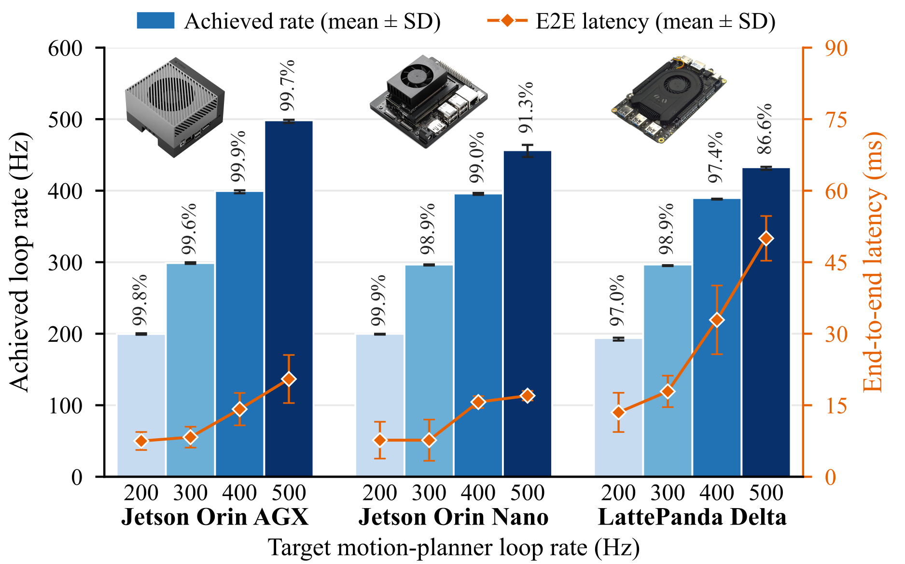
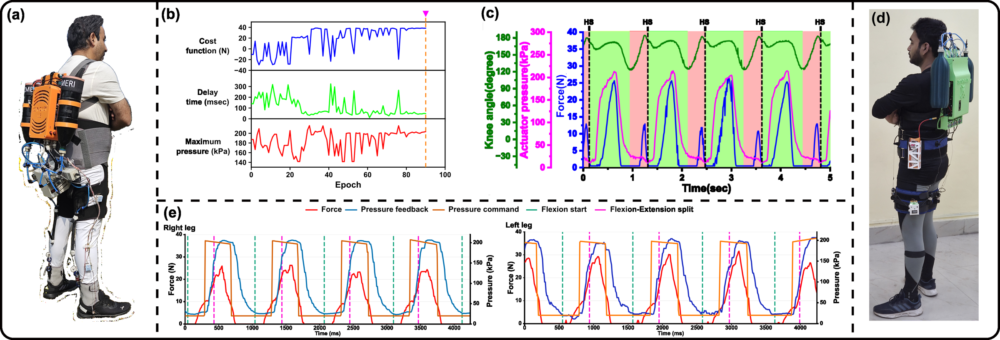

Validated hardware
ExoStack runs on popular embedded computers and has personalized assistance on two different pneumatic exosuits with the same code.
Two exosuits in action
Configurations of the two exosuits
ExoStack was validated on two pneumatic exosuits built at CSIR-CMERI. Both are actuated by pSTAMs, pneumatic silicone tube artificial muscles, through proportional pressure regulators, and both run the same ESA library and ExoCore nodes: they differ only in their device lists, YAML files and plug-ins. Fig. 5 of the paper shows both in use, and SoftEXOwalk is described in full in its own article.
Configurations
| SoftEXOwalk (knee) | Hip exosuit | |
|---|---|---|
| Assistance | bilateral knee flexion | bilateral hip flexion and extension |
| Actuators | one sensorized pSTAM across each knee, on the posterior side | four pSTAMs in a backpack, with tendons to the thighs and a speed-enhancement mechanism that makes them fast enough for walking |
| Sensing hubs | two, one per leg, over USB. Each reads an insole FSR (analog), two BNO085 IMUs (I²C), a load cell for validation (analog) and a silicone and carbon-black strain sensor on the pSTAM bladder (analog) | two on the thighs, over Wi-Fi, each reading an insole FSR (analog), two BNO085 IMUs (I²C) and two load cells through NAU7802 amplifiers (I²C); two in the backpack, over USB, each reading two encoders (I²C), two muscle strain sensors and two regulator pressures (analog), one of them also a BNO085 IMU (I²C) |
| Actuation hubs | two, over USB, each driving one proportional pressure regulator and reading back its pressure (analog) | two, over USB, each driving two proportional pressure regulators, one for flexion and one for extension, and four solenoid valves that assist the exhaust of the pSTAMs |
| Rates | hubs publish at 100 Hz; actuation loop at 100 Hz | hubs publish at 100 Hz; actuation loop at 100 Hz |
| Gait events | heel strike of each leg, from the FSR (HeelStrike) | terminal flexion and terminal extension of each leg, from zero crossings of the IMU angular velocity (ZeroCrossingPosToNeg, ZeroCrossingNegToPos) |
| Motion planners | one per leg, time-based, 100 Hz | two per leg, one for flexion and one for extension, time-based, 100 Hz |
| Profile | trapezoidal | trapezoidal |
| Deployment | speed lookup table, 3.5 to 5.5 km/h in steps of 0.5 km/h | speed lookup table, 3.5 to 5.5 km/h in steps of 0.5 km/h |
| HIL parameters | two: the amplitude and the onset delay after heel strike | four: delay, rise time, hold time and fall time, the delay counted from the event that initiates the profile (terminal extension for flexion assistance, terminal flexion for extension) |
| Optimizer | Bayesian (OPT_BAYESIAN) | CMA-ES (OPT_CMA_ES) |
| Cost | assistive and resistive force estimated by the sensorized pSTAM, split by knee angle (Cost_assist_resist_transmitted_force_knee_angle_splitter, shipped) | assistive and resistive force, split by the flexion and extension phases of the hip (custom cost plug-in) |
| Objective | maximize the peak assistive force | maximize the ratio of peak assistive to peak resistive force |
| Constraint | peak resistive force below 15 N | peak resistive force below 15 N |
| Personalized for | each speed and each leg | each speed and each leg, for flexion and for extension |
The two exosuits in ExoStack terms
Each row of the table becomes entries in the files of §2.2, and each entry one node. The instance counts of the overview figures are therefore:
| Instances | SoftEXOwalk | Hip exosuit |
|---|---|---|
| Sensing hubs (×N) | 2 | 4 |
| Actuation hubs (×M) | 2 | 2 |
| Gait-event detectors (×E) | 2 | 4 |
| Planners and profiles (×P) | 2 | 4 |
| Cost evaluators and HIL optimizers (×C, ×H) | 2 | 4 |
In Deployment, the profile nodes pick the trapezoidal profile for the measured walking speed from the lookup table; in HIL, one optimizer per profile tunes its parameters against the cost above, separately for each speed and leg, and the tuned values become the table rows used afterwards.
Benchmarks and validation
Benchmarking: We benchmarked ExoStack under ROS 2 Humble on a Jetson AGX Orin, a Jetson Orin Nano, and a LattePanda Delta. Each sensing hub carried ten devices, an I²C sensor on each of its two buses and eight analog inputs, and published at a target rate of 100 Hz. With up to eight such hubs on each computer, the observed rate was 99.5 ± 0.018 Hz, a period of 10.05 ms with a jitter of about 1.8 µs, so the hubs keep their rate as their number grows. With two such hubs and target motion-planner rates of 200 to 500 Hz, Fig. 4 shows the loop rate each computer achieved and the end-to-end latency from a sensing-hub input to an actuation-hub output. The Jetson AGX Orin achieved 99.6–99.9 % of every target with mean latencies of 8–21 ms. The Jetson Orin Nano kept at least 98.9 % up to 400 Hz, with 7–16 ms, and 91.3 % at 500 Hz. The LattePanda Delta achieved 97.0–98.9 % up to 400 Hz and 86.6 % at 500 Hz, where its latency rose to about 50 ms. At 200 and 300 Hz, all three kept at least 97 % of the target with mean latencies below 18 ms. Supplementary §3 details the set-up and results.
Validation on two exosuits: Two pneumatic exosuits, actuated by pSTAMs through proportional pressure regulators, ran the same ESA library and ExoCore nodes, differing only in configuration and plug-ins (Fig. 5, Supplementary §4). On the bilateral knee-flexion exosuit SoftEXOwalk , each leg had a USB sensing hub (insole FSR, two BNO085 IMUs, a load cell, and a pSTAM strain sensor), an actuation hub driving one regulator, and a heel-strike detector. Bayesian optimization tuned the amplitude and onset delay of a trapezoidal profile, maximizing the peak assistive force estimated by Cost_assist_resist_transmitted_force_knee_angle_splitter with the peak resistive force kept below 15 N. The hip exosuit assists flexion and extension of both hips through four pSTAMs in a backpack, with tendons and a speed-enhancement mechanism. Two wireless thigh hubs and two USB backpack hubs sensed the legs, muscles, and regulators, and two actuation hubs each drove two regulators and four exhaust valves. Terminal flexion and extension, detected from zero crossings of the IMU angular velocity, triggered one planner per direction and leg, and CMA-ES tuned the delay, rise, hold, and fall times of each profile to maximize the ratio of peak assistive to peak resistive force, again below 15 N. In both, the hubs ran at 100 Hz, assistance was personalized for each speed and leg, and Deployment selected profiles from speed lookup tables for 3.5 to 5.5 km/h.
Conclusion: ExoStack treats the software of a wearable robot as a framework rather than as a program written for one device. Built on ROS 2, it places body-worn hubs, host nodes, and external estimators on one graph, while configuration gives it scalability and template-based drivers and plug-ins give it extensibility. The benchmarks and the two exosuits confirm that one code base runs on popular embedded computers and personalizes assistance on different devices. Future releases will add motor-driven examples and upper-limb support, and we invite the community to build on ExoStack.

Test set-up
| Item | Set-up |
|---|---|
| Host computers | Jetson AGX Orin, Jetson Orin Nano, LattePanda Delta; ROS 2 Humble, ExoStack v1.0 |
| Sensing hub | ESP32 running ESA; ten devices per hub: one I²C sensor on MAIN, one on AUX1, and eight analog inputs |
| Hub publication | target rate 100 Hz (setupPublisher(topic, 100)) |
| Experiment 1: regularity | up to eight such hubs on each host computer, synchronized; observed publication rate |
| Experiment 2: loop rate and latency | two such hubs on each host computer; motion-planner target rates of 200, 300, 400 and 500 Hz; achieved planner rate and end-to-end latency from a sensing-hub input to an actuation-hub output |
Publication regularity
On each of the three computers, with up to eight hubs publishing at a target of 100 Hz, the observed rate was 99.5 ± 0.018 Hz (mean ± SD). This is a mean period of 10.05 ms whose spread, σT ≈ σf/f², corresponds to a jitter of about 1.8 µs: the hubs keep their rate as their number grows.
Results by computer
| Target rate (Hz) | Jetson AGX Orin | Jetson Orin Nano | LattePanda Delta |
|---|---|---|---|
| 200 | 99.8 % · 7.5 ms | 99.9 % · 7.4 ms | 97.0 % · 13.6 ms |
| 300 | 99.6 % · 8.4 ms | 98.9 % · 7.8 ms | 98.9 % · 17.8 ms |
| 400 | 99.9 % · 14.0 ms | 99.0 % · 15.5 ms | 97.4 % · 32.9 ms |
| 500 | 99.7 % · 20.6 ms | 91.3 % · 17.2 ms | 86.6 % · 50.0 ms |
Each cell: share of the target rate achieved by the motion planner · mean end-to-end latency. Shares as printed in the figure; latency means read from the plotted markers (±0.3 ms).
The Jetson AGX Orin achieved 99.6–99.9 % of every target with mean latencies of 8–21 ms. The Jetson Orin Nano kept at least 98.9 % up to 400 Hz (7–16 ms) and 91.3 % at 500 Hz. The LattePanda Delta achieved 97.0–98.9 % up to 400 Hz and 86.6 % at 500 Hz, where its latency rose to about 50 ms. At 200 and 300 Hz all three kept at least 97 % of the target with mean latencies below 18 ms, so a planner rate in this range leaves margin on every host tested.
